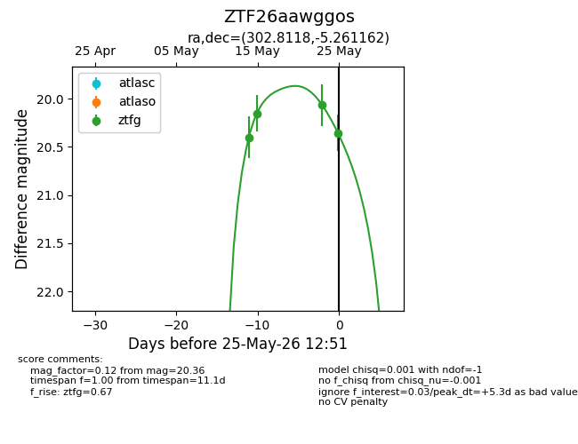
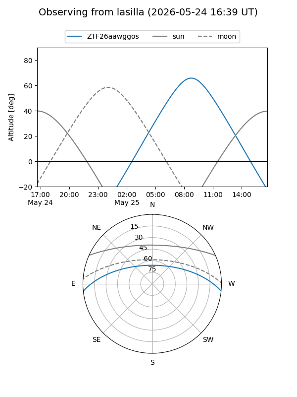
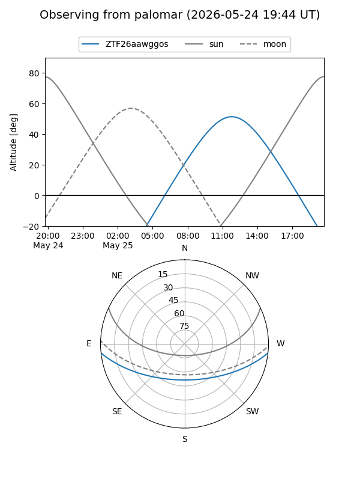
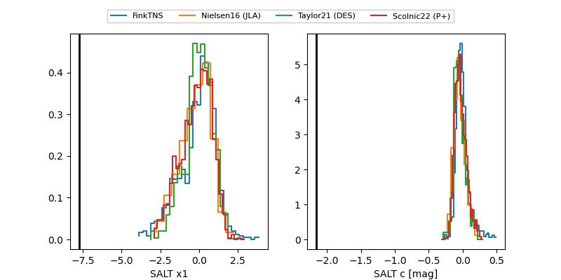

ZTF26aawggos
Target ZTF26aawggos at 2026-05-25 12:53
Aliases and brokers:
lsst-FINK: link
lsst-Lasair: link
lsst-ALeRCE: link
ztf-FINK: link
ztf-Lasair: link
ztf-ALeRCE: link
alt names
ZTF26aawggos (ztf,fink_ztf)
Coordinates:
equatorial (ra, dec) = 302.8118,-5.26116
equatorial (HMS+DMS) = 20:11:14.82,-05:15:40.18
galactic (l, b) = (37.4118,-20.13477)
Flags:
Photometry:
last ztfg=20.36
4 ztfg detections
Lightcurve

Visibility


Additional plots
